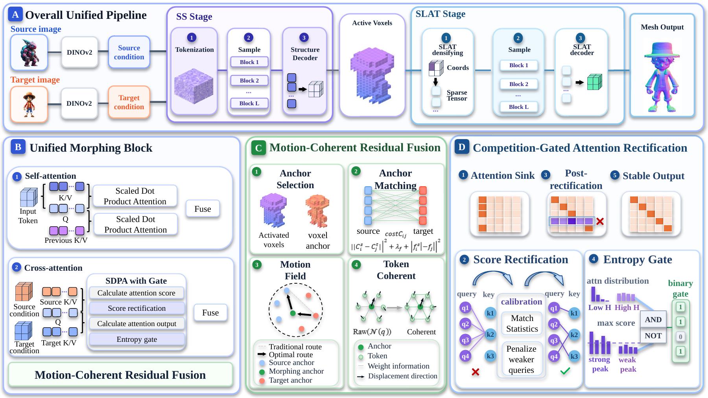
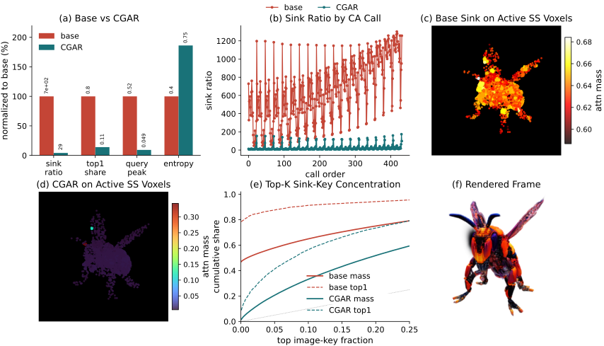
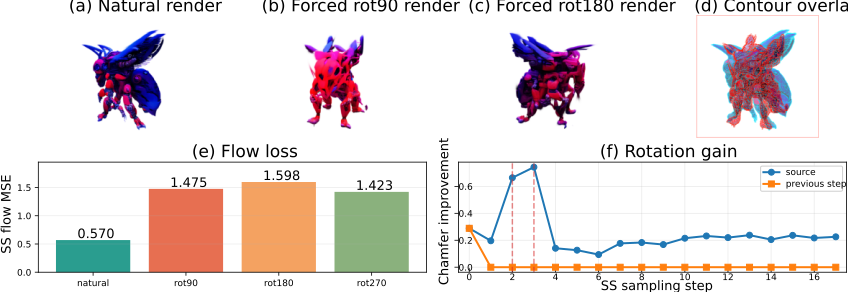
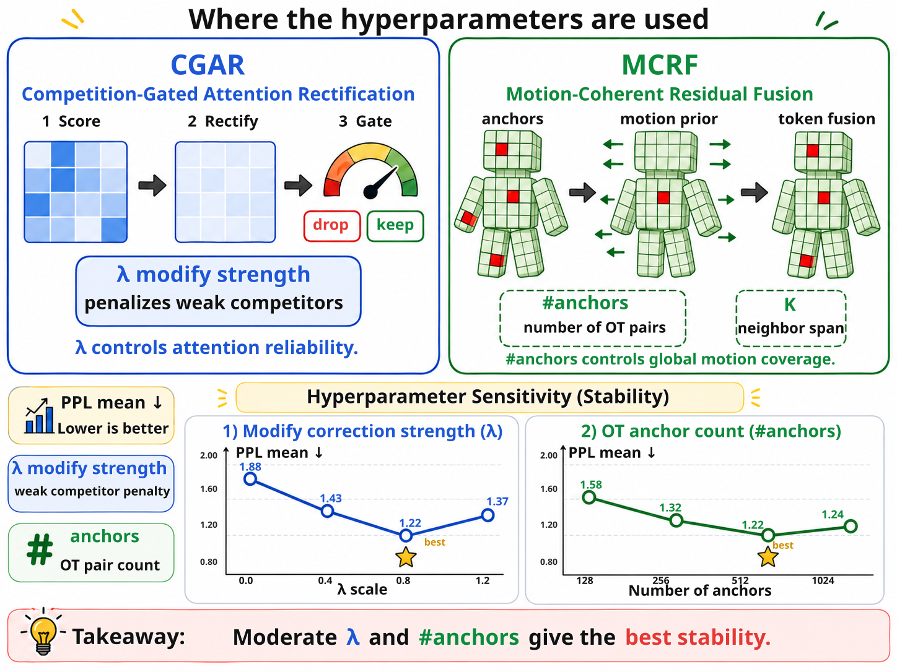

Current Challenge
Unstable morphing may introduce abrupt geometry changes and locally inconsistent intermediate states.
Recent 3D morphing methods employ frozen 3D generative models and synthesize intermediate shapes by fusing source-target conditions during sampling. However, generating semantically consistent and spatially smooth deformations remains challenging, particularly in cross-category scenarios. ReinMorph3D addresses attention-level correspondence collapse and token-wise fusion inconsistency through Competition-Gated Attention Rectification and Motion-Coherent Residual Fusion, producing geometrically stable, temporally smooth, and semantically coherent morphing sequences without retraining the backbone model.
Overall framework of ReinMorph3D.

Reference videos showing the current failure case and the stabilized result produced by ReinMorph3D.
Unstable morphing may introduce abrupt geometry changes and locally inconsistent intermediate states.
Our method improves morphing stability and produces a smoother, more coherent transition.
A slow-motion example highlights smooth geometry evolution and stable intermediate states.
ReinMorph3D remains competitive in closer semantic transitions while preserving smooth motion.
Putting the three variants side by side makes the effect of motion-coherent residual fusion easier to compare.
Three core ideas behind the stabilized SLAT morphing process.
Source and target memories are retrieved separately by the current latent queries, then fused after attention. This avoids directly blending unmatched K/V tokens at their original indices and makes the fusion happen in a query-aligned semantic space.
CGAR detects over-competitive key regions and demotes weak, ambiguous query-key matches while protecting confident positive responses. A reliability gate then suppresses low-confidence attention outputs to reduce accumulated correspondence collapse during repeated sampling.
MCRF estimates an OT-guided motion prior from anchor-level source-target correspondence and propagates it to token-level residual fusion. Local morphing updates are therefore coordinated by a global deformation trend instead of evolving independently.
Current quantitative table from the manuscript draft.
Generation quality
Perceptual path smoothness
Deformation stability
| Method | FID ↓ | PPL ↓ | PDV ↓ |
|---|---|---|---|
| MorphAny3D | 111.95 | 2.47 | 0.000600 |
| w/o CGAR | 111.47 | 1.571 | 0.001643 |
| w/o MCRF | 98.62 | 1.353 | 0.000282 |
| ReinMorph3D | 97.17 | 1.220 | 0.000258 |
Additional diagnostic figures prepared from the current paper assets.



If you find this project useful, please cite:
@article{reinmorph3d2026,
title = {ReinMorph3D: Stable 3D Morphing via Relation-Aware Attention and Motion Coherence},
author = {Wang, Xingtao and Li, Linmao and Li, WenRui},
journal = {IEEE Transactions on Image Processing},
year = {2026}
}